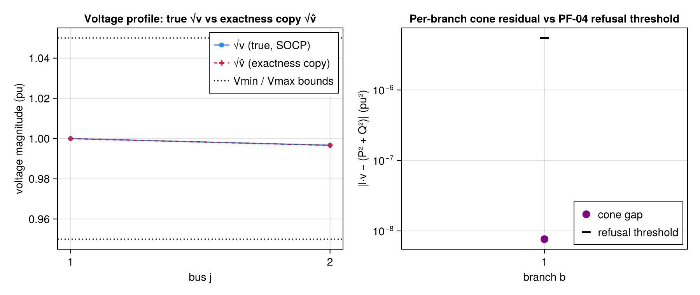

Rung 3 — SOCP Convex Branch-Flow & the LinDistFlow Exactness Copy
This page proves the SOCP branch-flow relaxation (ConvexBranchFlow) — the project's correctness keystone — is EXACT on a real radial feeder, by calling the real solve_welfare end-to-end and displaying the exactness certificate solve_welfare computed internally. Never a re-implemented cone or voltage-drop constraint.
The SOCP + exactness-copy math
ConvexBranchFlow relaxes the Baran-Wu / DistFlow branch-flow equations to a rotated second-order cone:
\[l_{ij}\, v_i \;\ge\; P_{ij}^2 + Q_{ij}^2 \qquad \text{(3.39, rotated SOC cone)}\]
written in JuMP as [0.5\,l,\, v_i,\, P,\, Q] \in \mathrm{RotatedSecondOrderCone()}. The relaxation alone is not exact in general — it can go STRICT (the squared branch current l becomes a fictitious over-current) precisely in the over-voltage / reverse-flow regime a high-PV feeder produces. The LinDistFlow "exactness copy" fixes this: an auxiliary squared voltage v̂ follows its own voltage-drop recursion
\[\hat v_j = \hat v_i - 2\bigl\{ r(P + rl) + x(Q + xl) \bigr\} \qquad \text{(3.43, exactness-copy voltage drop)}\]
and BOTH v and v̂ are bounded by the same squared-magnitude limits
\[V_{\min}^2 \le v,\, \hat v \le V_{\max}^2 \qquad \text{(3.45, voltage bounds on v AND v̂)}\]
The copy is not decorative: upper-bounding v̂ ≤ V²max drives the loss current l down until the cone (3.39) holds with equality at the optimum — this is exactly the l → 0 limit that collapses to the previous page's LinDistFlow linear voltage drop. Whether the cone actually closed tight is a numerical question, not an assumption; that is what the validation step below certifies.
using TSODSOBuilding a small radial feeder with one aggregator
The same minimal 2-bus radial shape used by the test suite's exactness fixtures, with one aggregator (a single-device aggregator is valid — devices need only be non-empty). The aggregator (thesis eqs. 3.21-3.23) is the SOLE :Rp/:Rq network writer; its member device must therefore conform to the AGGREGATABLE-device contract (returns (; vars, p_inject, utility), writes nothing itself) rather than the self-injecting Interruptible used on the previous page — here a Deferrable flexible load (thesis eqs. 3.4-3.5, 3.12).
buses = [
Bus(1, 0.95, 1.05, true), # root / MEM frontier
Bus(2, 0.95, 1.05, false),
]
branches = [Branch(1, 2, 0.01, 0.02, 10.0)] # r, x, smax (pu)
feeder = Feeder(buses, branches, 1) # validated on construction
device = Deferrable(2, 1, 1, 0.5, 1.0, 1.0) # bus, t_start, t_end, E, Pmax, b (b > 0)
agg = Aggregator(2, 0.95, [device], [0.2]) # bus, φ, devices, PdcAggregator{Float64, Vector{Deferrable{Float64}}}(2, 0.95, Deferrable{Float64}[Deferrable{Float64}(2, 1, 1, 0.5, 1.0, 1.0, 0.0)], [0.2])Solving through the real GLB-CVX welfare assembly
solve_welfare lets ConvexBranchFlow contribute! the cone, both voltage drops (true + copy), and the loss terms into the shared residuals, then — strictly AFTER assert_solved! and BEFORE any dual is read — runs the PF-04 exactness gate assert_socp_exact! INSIDE the solve itself. That gate THROWS (refusing prices) on an inexact relaxation, so reaching this line at all is already the passing certificate. allow_export = true gives the feeder a priced export sink for reverse-flow surplus — the exactness enabler for the over-voltage regime.
ctx, objective, dadp =
solve_welfare(feeder, ConvexBranchFlow(), [agg]; T = 1, λ₀ = [1.0], allow_export = true)(ModelContext(A JuMP Model
├ solver: Clarabel
├ objective_sense: MAX_SENSE
│ └ objective_function_type: JuMP.QuadExpr
├ num_variables: 11
├ num_constraints: 19
│ ├ JuMP.AffExpr in MOI.EqualTo{Float64}: 6
│ ├ JuMP.AffExpr in MOI.LessThan{Float64}: 1
│ ├ Vector{JuMP.AffExpr} in MOI.SecondOrderCone: 1
│ ├ Vector{JuMP.AffExpr} in MOI.RotatedSecondOrderCone: 1
│ ├ JuMP.VariableRef in MOI.EqualTo{Float64}: 2
│ ├ JuMP.VariableRef in MOI.GreaterThan{Float64}: 4
│ ├ JuMP.VariableRef in MOI.LessThan{Float64}: 3
│ └ JuMP.VariableRef in MOI.Parameter{Float64}: 1
└ Names registered in the model
└ :P, :Q, :balance_p, :balance_q, :cone, :cpydrop, :l, :p_import, :q_import, :smax, :v, :vdrop, :v̂, Dict{Symbol, Any}(:smax => [1, 1] = smax[1,1] : [10, P[1,1], Q[1,1]] ∈ MathOptInterface.SecondOrderCone(3), :vdrop => JuMP.ConstraintRef{JuMP.Model, MathOptInterface.ConstraintIndex{MathOptInterface.ScalarAffineFunction{Float64}, MathOptInterface.EqualTo{Float64}}, JuMP.ScalarShape}[vdrop[1,1] : -v[1,1] + v[2,1] + 0.02 P[1,1] + 0.04 Q[1,1] - 0.0005 l[1,1] = 0;;], :cone => JuMP.ConstraintRef{JuMP.Model, MathOptInterface.ConstraintIndex{MathOptInterface.VectorAffineFunction{Float64}, MathOptInterface.RotatedSecondOrderCone}, JuMP.VectorShape}[cone[1,1] : [0.5 l[1,1], v[1,1], P[1,1], Q[1,1]] ∈ MathOptInterface.RotatedSecondOrderCone(4);;], :cpydrop => JuMP.ConstraintRef{JuMP.Model, MathOptInterface.ConstraintIndex{MathOptInterface.ScalarAffineFunction{Float64}, MathOptInterface.EqualTo{Float64}}, JuMP.ScalarShape}[cpydrop[1,1] : -v̂[1,1] + v̂[2,1] + 0.02 P[1,1] + 0.04 Q[1,1] + 0.001 l[1,1] = 0;;], :balance_p => JuMP.ConstraintRef{JuMP.Model, MathOptInterface.ConstraintIndex{MathOptInterface.ScalarAffineFunction{Float64}, MathOptInterface.EqualTo{Float64}}, JuMP.ScalarShape}[balance_p[1,1] : -P[1,1] + p_import[1] = 0; balance_p[2,1] : P[1,1] - 0.01 l[1,1] - _[8] - _[9] = 0;;], :balance_q => JuMP.ConstraintRef{JuMP.Model, MathOptInterface.ConstraintIndex{MathOptInterface.ScalarAffineFunction{Float64}, MathOptInterface.EqualTo{Float64}}, JuMP.ScalarShape}[balance_q[1,1] : -Q[1,1] + q_import[1] = 0; balance_q[2,1] : Q[1,1] - 0.02 l[1,1] - 0.32868410517886315 _[8] = 0;;]), Dict{Symbol, Any}(:Rp => JuMP.AffExpr[-P[1,1] + p_import[1]; P[1,1] - 0.01 l[1,1] - _[9] - _[8];;], :Rq => JuMP.AffExpr[-Q[1,1] + q_import[1]; Q[1,1] - 0.02 l[1,1] - 0.32868410517886315 _[8];;]), Dict{Symbol, Any}(:T => 1, :agg_net => NamedTuple[(bus = 2, net = JuMP.AffExpr[-_[9] - 0.2], utility = -0.5 _[9]² + 0.5 _[9] - 0.125)], :p_import => JuMP.VariableRef[p_import[1]], :socp_maxgap => 7.631472599689548e-9, :agg_device_vars => Dict{Int64, Vector{Any}}(2 => [(p = JuMP.VariableRef[_[9]],)]), :feeder => Feeder{Float64}(Bus{Float64}[Bus{Float64}(1, 0.95, 1.05, true), Bus{Float64}(2, 0.95, 1.05, false)], Branch{Float64}[Branch{Float64}(1, 2, 0.01, 0.02, 10.0)], 1), :objective => -0.5 _[9]² + 0.5 _[9] - 0.125, :q_import => JuMP.VariableRef[q_import[1]], :pf_vars => (v = JuMP.VariableRef[v[1,1]; v[2,1];;], v̂ = JuMP.VariableRef[v̂[1,1]; v̂[2,1];;], P = JuMP.VariableRef[P[1,1];;], Q = JuMP.VariableRef[Q[1,1];;], l = JuMP.VariableRef[l[1,1];;]))), -0.32544618152262306, [1.004031070758846])Validation
The optimal social welfare:
objective-0.32544618152262306The recovered distribution price (DADP) at the aggregator's bus:
dadp1-element Vector{Float64}:
1.004031070758846The PF-04 exactness certificate: solve_welfare already ran assert_socp_exact! internally and stashed its result. A well-under-tolerance socp_maxgap here is a REAL, solved number — not a hardcoded placeholder — confirming the cone l·v ≥ P²+Q² closed with equality at the optimum, so the DADP above is trustworthy.
ctx.meta[:socp_maxgap]7.631472599689548e-9Exactness figure — WHY the certificate holds (CairoMakie)
Two panels drawn from the SAME solved model — ctx.meta[:pf_vars], the (; v, v̂, P, Q, l) stash ConvexBranchFlow left behind for the PF-04 checker — so no additional solve happens here, only value(...) reads off the already-optimal point.
Left — the voltage profile and the exactness copy. The solved voltage magnitude √v at every bus, overlaid with the LinDistFlow exactness copy √v̂ (thesis 3.43) and the shared squared-magnitude bounds (3.45, dashed). The two series COINCIDING is the geometric face of exactness: at a tight cone the copy's l → 0-limit recursion and the true drop (3.33) agree, which is exactly the collapse-to-LinDistFlow mechanism the page's opening math describes.
Right — the per-branch cone residual against its refusal threshold. The absolute relaxation gap |l·v − (P² + Q²)| per branch on a log axis, against the SAME combined bound atol + rtol·max(|l·v|, |P²+Q²|) that assert_socp_exact! judged it by (its documented defaults, rtol = 1e-4, atol = 1e-6). The gap sitting orders of magnitude BELOW the dashed refusal line — not marginally under it — is the visual form of the certificate displayed above (the worst gap plotted here IS ctx.meta[:socp_maxgap]). The max.(·, eps()) floor mirrors the package's own TSODSOMakieExt log-axis guard: a residual of exactly 0.0 maps to log10(0) = -Inf, which Makie rejects.
using TSODSO.JuMP rather than using JuMP (the socp_applicability.jl idiom): JuMP is already loaded as a dependency of TSODSO, so this reaches value without touching the docs environment's dependency set.
using TSODSO.JuMP
using CairoMakie
pv = ctx.meta[:pf_vars]
nbus = length(feeder.buses)
V_true = [sqrt(value(pv.v[j, 1])) for j in 1:nbus]
V_copy = [sqrt(value(pv.v̂[j, 1])) for j in 1:nbus]
cone_lhs =
[value(pv.l[b, 1]) * value(pv.v[br.from, 1]) for (b, br) in enumerate(feeder.branches)]
cone_rhs = [value(pv.P[b, 1])^2 + value(pv.Q[b, 1])^2 for b in 1:length(feeder.branches)]
cone_gap = abs.(cone_lhs .- cone_rhs)
refusal = 1e-6 .+ 1e-4 .* max.(abs.(cone_lhs), abs.(cone_rhs)) # assert_socp_exact! defaults
fig = Figure(size = (900, 380))
ax_v = Axis(
fig[1, 1];
xlabel = "bus j",
ylabel = "voltage magnitude (pu)",
xticks = 1:nbus,
title = "Voltage profile: true √v vs exactness copy √v̂",
)
scatterlines!(ax_v, 1:nbus, V_true; label = "√v (true, SOCP)", color = :dodgerblue)
scatterlines!(
ax_v,
1:nbus,
V_copy;
label = "√v̂ (exactness copy)",
color = :crimson,
linestyle = :dash,
marker = :cross,
)
hlines!(
ax_v,
[feeder.buses[1].vmin, feeder.buses[1].vmax];
label = "Vmin / Vmax bounds",
color = :black,
linestyle = :dot,
)
axislegend(ax_v; position = :rt)
ax_gap = Axis(
fig[1, 2];
xlabel = "branch b",
ylabel = "|l·v − (P² + Q²)| (pu²)",
yscale = log10,
xticks = 1:length(feeder.branches),
title = "Per-branch cone residual vs PF-04 refusal threshold",
)
scatter!(
ax_gap,
1:length(feeder.branches),
max.(cone_gap, eps());
label = "cone gap",
color = :purple,
markersize = 14,
)
scatter!(
ax_gap,
1:length(feeder.branches),
refusal;
label = "refusal threshold",
color = :black,
marker = :hline,
markersize = 18,
)
# legend bottom-right: the refusal-threshold marker sits at the TOP of the log axis
# (the axis autoscales to it), so a top-positioned legend would occlude it.
axislegend(ax_gap; position = :rb)
fig
This page was generated using Literate.jl.